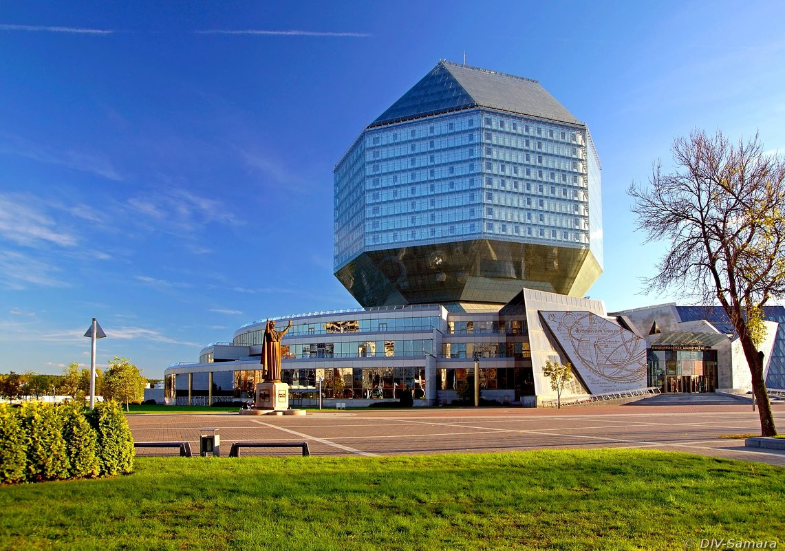

Официальные символы Минска
Герб Минска — Вознесение Богородицы — представляет собой Богородицу в красно-фиолетовых одеждах на серебряном облаке. Её возносят в небо два летящих ангела, а над ними два херувима. Герб был присвоен городу в 1591 году. Согласно легенде, икона с изображением Вознесения прибыла в город вверх по течению Свислочи из Киева, разрушенного монголо-татарами.
Флаг Минска представляет собой прямоугольник из ткани голубого цвета с соотношением ширины и длины 11:18. Посередине лицевой стороны полотнища флага располагается изображение гербовой эмблемы города Минска.
Гимном Минска является «Песня про Минск». Утверждён в качестве официального минского символа решением Минского городского Совета народных депутатов № 207 от 24 октября 2001 года «О гимне города Минска — столицы Республики Беларусь». Автор текста — И. Панкевич. музыка В. Оловникова. Он исполняется при открытии и закрытии сессий Минского городского Совета депутатов, собраний и заседаний Минского городского исполнительного комитета, посвящённых государственным праздникам Республики Беларусь; при открытии памятников, монументов, обелисков и других сооружений в ознаменование важнейших исторических и общественно-политических событий города Минска; при вручении городу Минску государственных наград Республики Беларусь и на других торжественных мероприятиях.
национальная библиотека как символ беларусской архитектуры
Строительство было начато 2 ноября 2002 года недалеко от жилого микрорайона Восток-1 и станции метро «Восток». В строительстве принимали участие около 5 тысяч специалистов[8]. Приёмка первого пускового комплекса, включающего котельную с инженерными сетями, очистные сооружения, систему энергоснабжения, внешние инженерные сети, была проведена в октябре 2005 года. Были также проведены работы по благоустройству прилегающей территории (в 2016—2018 годах восточную часть устроенного парка снесли для строительства автостоянки соседнего торгового центра).
Второй пусковой комплекс, приёмка которого была завершена в конце декабря 2005 года, предполагает ввод в действие книгохранилища, читальных залов и служебных помещений, всех инженерных и информационных систем, а также социокультурного центра. В него входят многофункциональный конференц-зал, центр деловых встреч и переговоров, музыкально-художественный салон, музейный комплекс, художественная галерея.
Пуск третьей очереди предусматривал начало эксплуатации комплекса информационно-технологических систем, обеспечивающих работу персонала и обслуживание пользователей, центра международных встреч, включающего в себя офис президента, два конференц-зала и зала саммитов и примыкающих к ним помещений. Ввод в действие этих объектов, который был осуществлён 31 мая 2006 года, позволил открыть библиотеку для читателей.
Национальная библеотека

© Соколовский Алекский Сергеевич